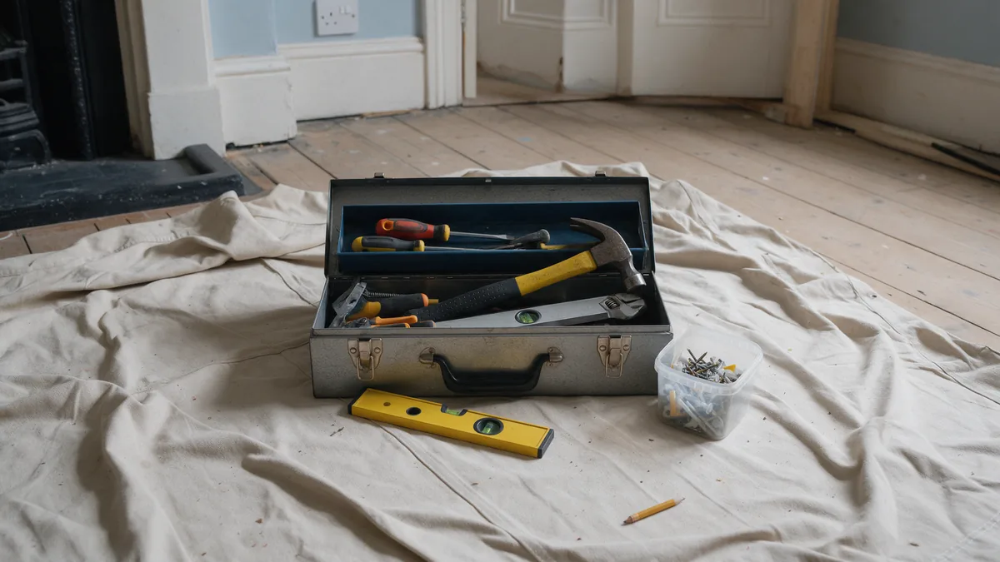
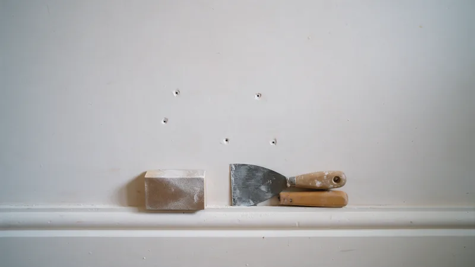

Generated photoA handyman visit is a block of time, not a job. What decides how much of your list gets done in it is not how fast anybody works. It is whether the right parts and the right tools came through the door at the start.
That is entirely in your gift, and it takes about ten minutes.
Three columns
For each thing on the list, write the room, the thing, and what it is doing wrong. That is all.
- Room. Front bedroom, not upstairs. Back door, not outside.
- Thing. The cupboard next to the sink. The second fence post from the gate. The handrail on the stairs.
- What is wrong. Catches at the top. Leaning. Loose at the upper bracket.
Compare that to "sort the kitchen cupboards" and you can see what each version lets somebody put in the van before they set off.
Photographs beat descriptions
For anything with a hinge, a bracket, a catch or a fixing on it, a photograph on your phone saves a lot of guessing. Two pictures is usually right: one from a few steps back so the whole thing is in shot, and one close in on the part that is wrong.
Include a photograph of anything you have bought that needs fitting, especially blinds, poles and brackets, because the fixings that come in the box vary enormously.
Say what you have already got
If the shelf, the pole, the blind or the replacement handle is already in the house, say so and say where it is. If it is not, say that too, because that is the difference between a job that happens on the day and a job that waits for a second visit.
Put them in your order, not ours
If one thing on the list matters more than the rest, put it at the top and say so. Lists get worked down in order unless something has to come first for a practical reason, like getting at a wall before furniture goes back.
Be honest about the awkward ones
The job behind the wardrobe. The one where the cat has to be shut in. The window you can only reach from the neighbour's side. None of those are problems if they are known about at the start, and all of them are problems if they turn up at half ten.
What not to bother writing
How long you think it will take. How easy you think it is. Both are offered kindly and both are usually wrong in one direction or the other, and neither changes what goes in the van.
Keep the list after the visit
Whatever did not get done is still on it, with a reason next to it. That is the start of the next list rather than a blank page, and the jobs that need another trade are already written down in a form you can read out on the phone.
Drawn, not photographed
Two lists, same house
The one on the right gets more ticked off, and not because the person writing it tried harder. It just says enough for the right parts to be in the van.
Written in a hurry
Written in ten minutes
Questions
On this one
How long should the list be?
As long as you like. We will tell you what we think fits before we come, and nothing is quietly dropped.
What if I think of something on the day?
Say so. If it fits it goes on, and if it does not it gets written down for next time.
Does it have to be typed?
No. A photograph of a list on the back of an envelope is fine.
More advice
The other two
 Generated photo
Generated photoSmall jobs landlords should sort between tenants
The week the keys are back is the only week the whole place is empty and nothing is urgent. Here is the list that is worth doing in it, and the order to do it in.

Generated photoJobs that need a specialist instead
We would rather tell you on the phone than turn up and tell you at the door. These are the jobs that go to the right trade, and the plain reason each one does.
Got a list?
Send it over with the room, the thing and what is wrong with it.